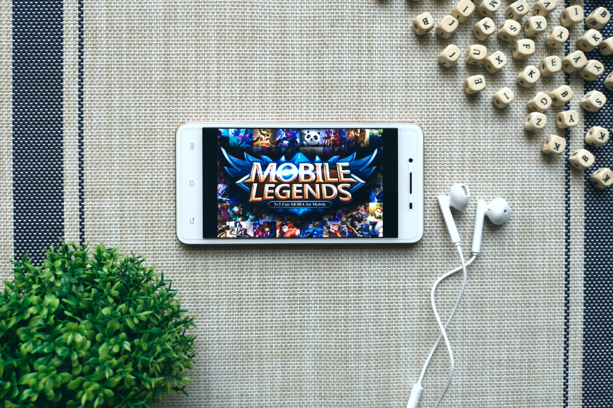
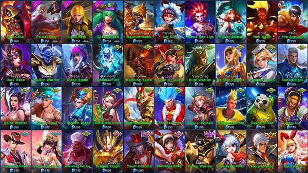

Pengenalan
Mobile Legends: Bang Bang adalah game MOBA populer yang membutuhkan strategi, kerja tim, dan keterampilan. Panduan ini akan membantu kamu meningkatkan kemampuan dan naik peringkat!
Tips Penting
- Pahami peranmu: Tank, Fighter, Mage, Assassin, Marksman, atau Support.
- Fokus farming untuk mendapatkan emas di awal permainan.
- Latih kesadaran peta dan pasang ward di lokasi strategis.
- Komunikasikan rencana dengan tim untuk sinergi yang lebih baik.
- Adaptasi dengan meta terbaru dan pelajari strategi counter.
Panduan Hero
Pilih hero yang sesuai dengan gaya bermainmu:

Marksman
Memberikan damage besar dari jarak jauh. Contoh: Miya, Layla.
Tank
Melindungi tim dan menyerap damage. Contoh: Tigreal, Hylos.
Assassin
Menghabisi musuh dengan cepat. Contoh: Fanny, Lancelot.
Strategi Lanjutan
Kuasi strategi ini untuk mendominasi permainan:
- Rotasi: Bergerak secara strategis antar jalur untuk mendukung rekan tim.
- Fokus Objektif: Prioritaskan turret, Lord, dan Turtle daripada memburu kill.
- Split Push: Tekan tim lawan dengan menyerang jalur berbeda.
FAQ
Punya pertanyaan? Berikut jawabannya:
Bagaimana cara naik rank?
Fokus pada kerja tim, latihan konsisten, dan belajar dari kesalahan.
Role apa yang terbaik?
Tergantung gaya bermainmu. Cobalah berbagai peran untuk menemukan kekuatanmu.